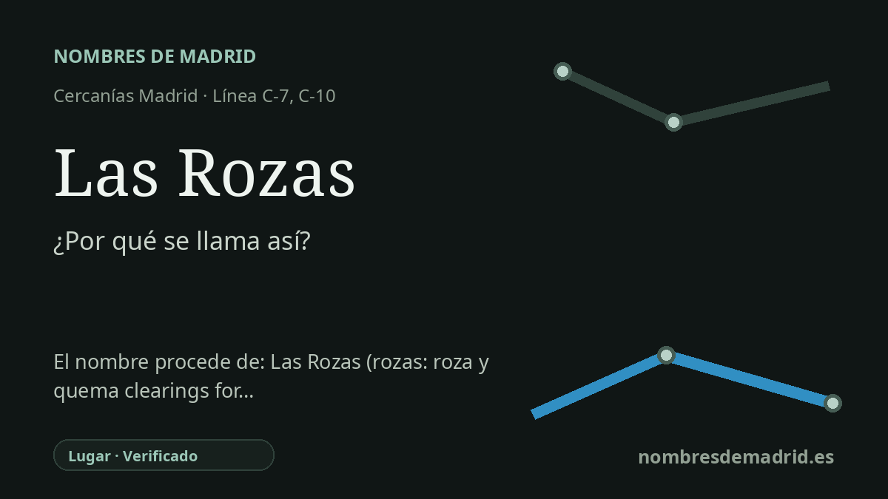

Publicado el · Investigación de Nombres de Madrid · Cómo verificamos cada origen · 7 fuentes consultadas
Respuesta rápida
La estación toma su nombre de Las Rozas de Madrid. El topónimo alude a las rozas: tierras desbrozadas o roturadas por primera vez para el cultivo.
La historia del nombre
La estación de Las Rozas toma su nombre de Las Rozas de Madrid, el municipio del noroeste madrileño donde se sitúa. En la red ferroviaria, por tanto, el nombre funciona primero como topónimo: identifica la localidad, no a una persona, un acontecimiento ni un monumento.
El origen más profundo está en la palabra castellana **roza**. En el vocabulario agrícola, **rozar** es limpiar una tierra de matas y hierbas antes de labrarla, y **roza** pasó a designar una parcela despejada o preparada para sembrar. El plural **Las Rozas** sugiere no una sola finca, sino un paisaje de tierras ganadas al matorral o al monte para el cultivo.
Los resúmenes históricos locales relacionan el nombre con un asentamiento rural temprano y con la creación de tierras agrícolas productivas. El material turístico municipal indica que el nombre apunta a una zona de cultivos y sitúa el primer gran auge de población en el siglo XVI, cuando Madrid se convirtió en capital y la construcción de El Escorial aumentó la demanda de alimentos y de rutas de abastecimiento hacia el noroeste.
El ferrocarril añade otra capa al topónimo. La documentación municipal sobre Las Matas y la Línea del Norte recoge pruebas oficiales entre Madrid y Las Rozas en abril de 1861, la inauguración Madrid-El Escorial en junio de 1861 y la puesta en servicio del primer tramo en agosto de 1861; Las Rozas figura entre las estaciones iniciales. La parada actual de Cercanías conserva ese antiguo nombre ferroviario y presta servicio en las líneas C-7 y C-10.
La etimología agrícola es sólida, pero algunos detalles deben formularse con cautela. Un PDF municipal de medio ambiente recoge formas antiguas como **ROÇAS** en el siglo XIII, **ROZAS** en un texto de 1312, formas cartográficas como **ALAROZAS** y **ALAROZA**, y el actual **Las Rozas de Madrid**. El sentido general está bien respaldado; no se ha encontrado el acto exacto de denominación de la estación, y la roza y quema no debe presentarse como único significado de **roza** salvo que una fuente histórica específica pruebe la quema en este lugar.